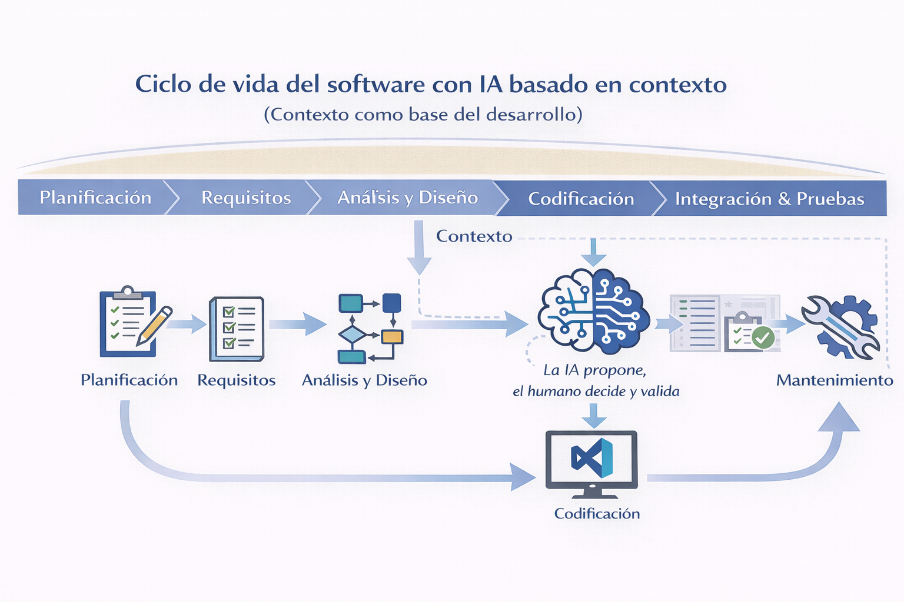

Introducción al desarrollo de software
Material de apoyo detallado para el curso
Este documento acompaña a las diapositivas y sirve como material de lectura y consulta para el estudiante.
Prerrequisitos
Para cursar esta asignatura se espera que el estudiante:
- Disponga de una computadora personal con sistema operativo Windows, macOS o Linux.
- Siga la Guía de infraestructura del curso para instalar y configurar:
- Python
- uv para la gestión de entornos y dependencias
- Visual Studio Code (VSC) como entorno de desarrollo
- Tenga nociones básicas del uso de sistemas tipo Unix/Linux, incluyendo:
- navegación de directorios,
- ejecución de comandos en la terminal.
- Conozca conceptos básicos de algoritmos, como secuencias, condicionales y ciclos.
La correcta instalación del entorno forma parte del trabajo inicial del curso y será acompañada mediante la guía proporcionada.
1. Propósito de la sesión
El objetivo de esta primera clase es proporcionar una visión general de lo que implica el desarrollo de software, particularmente en contextos científicos y de ciencias genómicas. No se espera que el estudiante domine herramientas ni técnicas en esta sesión, sino que comprenda el panorama, el lenguaje básico y la forma de trabajo que se seguirá durante el curso.
Esta clase también busca alinear expectativas: desarrollar software no es solo escribir código, sino trabajar de manera organizada, reproducible y colaborativa.
Objetivos de aprendizaje
El estudiante será competente para explicar las fases del ciclo de vida del software y los productos típicos de cada fase.
El estudiante será competente para distinguir requisitos funcionales vs. no funcionales en un caso sencillo.
El estudiante será competente para representar una solución simple mediante un diagrama (flujo o caso de uso) en Mermaid.
El estudiante será competente para describir la infraestructura mínima del curso (VS Code, CLI, estructura de proyecto) y verificar que su entorno funciona.
El estudiante será competente para usar IA de forma responsable para clarificar dudas sin sustituir el aprendizaje (con reglas del curso).
2. ¿Qué es el desarrollo de software?
El desarrollo de software es un proceso estructurado para crear soluciones computacionales a problemas específicos. Incluye actividades como:
- Comprender el problema
- Diseñar una solución
- Implementarla mediante código
- Verificar que funcione correctamente
- Mantenerla y mejorarla con el tiempo
Es importante distinguir entre:
- Programar: escribir instrucciones en un lenguaje de programación.
- Desarrollar software: diseñar, construir, probar y mantener una solución completa.
Desarrollar software implica también generar el contexto necesario para que otros entiendan y usen la solución.
En este curso se trabajará con esta segunda visión.
3. El desarrollo de software en ciencias genómicas
En las ciencias genómicas, el software es una herramienta central para:
- Analizar grandes volúmenes de datos
- Automatizar procesos repetitivos
- Garantizar la reproducibilidad de los análisis
- Documentar de forma clara los procedimientos computacionales
Ejemplos comunes de software científico incluyen:
- Scripts para análisis de datos
- Pipelines de procesamiento
- Notebooks computacionales
- Herramientas especializadas de análisis genómico
4. Ciclo de vida del desarrollo de software
El desarrollo de software suele organizarse en una serie de etapas conocidas como ciclo de vida del desarrollo de software. La figura incluida en el material ilustra este ciclo como una ruta que va desde la idea inicial hasta el mantenimiento del software, destacando que en cada etapa se generan productos y se aplican estándares de calidad.
 Figura Ciclo de vida clásico del desarrollo de software y sus entregables. Cada fase (planificación, requisitos, análisis y diseño, codificación, pruebas, liberación y mantenimiento) produce artefactos específicos, documentados mediante estándares y buenas prácticas para asegurar calidad y reproducibilidad.
Figura Ciclo de vida clásico del desarrollo de software y sus entregables. Cada fase (planificación, requisitos, análisis y diseño, codificación, pruebas, liberación y mantenimiento) produce artefactos específicos, documentados mediante estándares y buenas prácticas para asegurar calidad y reproducibilidad.
La siguiente figura refuerza este ciclo incorporando explícitamente el papel de la IA como apoyo en distintas etapas.

Figura Ciclo de vida de software con IA. Ciclo de vida del desarrollo de software con apoyo de inteligencia artificial, donde los requisitos y el análisis–diseño definen el contexto que guía la codificación. La IA actúa como asistente proponiendo soluciones, mientras que el humano decide, valida y mantiene la responsabilidad sobre el software.
Veamos cada etapa del ciclo de vida
💡 Planificación
En esta etapa se define el alcance general del proyecto. Se identifican los objetivos, los recursos disponibles y las restricciones. El producto típico de esta fase es un documento de descripción del proyecto, que sirve como punto de partida para todo el desarrollo.
📋 Requisitos
La etapa de requisitos define qué debe hacer el software y bajo qué condiciones debe hacerlo. En el contexto actual, donde se utilizan herramientas de inteligencia artificial para apoyar el desarrollo, esta fase es especialmente crítica, ya que los requisitos constituyen el contexto que permite a la IA entender correctamente el problema.
Los requisitos se pueden clasificar en dos grandes tipos:
Requisitos funcionales
- Describen las funciones o acciones que el software debe realizar.
- Responden a la pregunta: ¿qué hace el sistema?
Requisitos no funcionales
- Describen restricciones o cualidades del software.
- Responden a la pregunta: ¿cómo debe comportarse el sistema?
En esta etapa también se espera generar un documento de contexto, que puede tomar la forma de:
README.md- Documento de contexto
- Texto estructurado en un notebook
Este documento debe describir:
- El problema que se quiere resolver
- Los requisitos funcionales y no funcionales
- Los supuestos y limitaciones
Definir buenos requisitos y documentarlos de forma clara es fundamental para:
- Diseñar adecuadamente el análisis
- Guiar la implementación
- Interactuar eficazmente con herramientas de IA mediante prompts bien contextualizados
El documento que usaremos en este curso será README.md, mas tarde veremos lo que contiene para que lo uses como una plantilla para tus proyectos (ver plantillas propuestas).
🧩 Análisis y diseño
La etapa de análisis y diseño tiene como objetivo transformar los requisitos en una idea clara de solución. Mientras que los requisitos definen el problema, el análisis y el diseño definen cómo se va a resolver.
En el contexto del desarrollo de software apoyado por inteligencia artificial, esta etapa adquiere un papel central, ya que permite construir el contexto de la solución que guiará tanto al desarrollador humano como a la IA.
Análisis: entender y descomponer el problema
El análisis consiste en:
- Descomponer el problema en partes más pequeñas
- Identificar los pasos necesarios para resolverlo
- Reconocer entradas, procesos y salidas
- Detectar posibles dificultades o ambigüedades
Desde el punto de vista del contexto para la IA, el análisis ayuda a:
- Reducir interpretaciones incorrectas
- Limitar el espacio de soluciones posibles
- Hacer explícitas las decisiones implícitas del problema
Diseño: estructurar la solución
El diseño consiste en:
- Organizar los pasos del análisis en una estructura lógica
- Definir el flujo de datos
- Decidir cómo se dividirá el programa (funciones, módulos, scripts)
- Establecer convenciones básicas de nombres y formatos
El diseño no implica aún escribir código detallado, sino tomar decisiones previas que orienten la implementación.
Análisis y diseño como parte del contexto
En este curso se propone entender el contexto para el desarrollo de software —y para el uso efectivo de IA— como la suma de dos componentes:
- Contexto del problema: definido por los requisitos funcionales y no funcionales.
- Contexto de la solución: definido por el análisis y el diseño.
Ambos tipos de contexto son complementarios. Cuando solo se proporcionan requisitos, la IA tiende a inferir o inventar el diseño. Cuando se incluye también el análisis y el diseño, las respuestas de la IA son más coherentes, precisas y alineadas con la intención del análisis científico.
Aplicación para nuestro curso
En este curso, el análisis y el diseño no se documentarán de forma extensa ni formal. En su lugar, se espera que los estudiantes:
- Expliquen con claridad el flujo general del análisis
- Justifiquen las decisiones principales de la solución
- Utilicen esquemas simples, texto estructurado o diagramas ligeros
El objetivo no es producir documentación exhaustiva, sino pensar antes de programar y generar un contexto sólido que permita desarrollar software científico reproducible, comprensible y apoyado eficazmente por herramientas de IA.
💻 Codificación
La codificación corresponde a la implementación del diseño en forma de código. En este curso, esta etapa se realizará utilizando:
- Visual Studio Code (VSC) como entorno de desarrollo
- Extensiones seleccionadas para apoyar el trabajo (formato, análisis, ejecución)
- GitHub Copilot como asistente de programación basado en inteligencia artificial
La codificación no se realiza de manera aislada: el código que se escribe —o que propone la IA— está guiado por el contexto definido en las etapas previas del desarrollo de software.
Rol de requisitos, análisis y diseño
En este curso:
- Los requisitos proporcionan el contexto del problema.
- El análisis y el diseño proporcionan el contexto de la solución.
- El estudiante es responsable de evaluar, comprender y justificar el código generado, independientemente de si fue escrito manualmente o con apoyo de IA.
Codificación en el contexto del software científico
En el desarrollo de software científico, el orden y el uso de estándares no son un requisito estético, sino una condición necesaria para producir resultados confiables, reproducibles y verificables.
El orden se refleja en:
- una estructura clara del proyecto,
- la separación entre código, datos, documentación y pruebas,
- la definición explícita del problema antes de comenzar a programar.
Trabajar de forma ordenada permite:
- entender qué hace el software,
- reproducir resultados,
- detectar errores de manera más sencilla.
Los estándares proporcionan un lenguaje común que permite que otras personas —y uno mismo en el futuro— puedan entender, ejecutar y reutilizar el software. En este curso, los estándares se entienden como acuerdos prácticos y ampliamente aceptados, por ejemplo:
- el uso de documentos Markdown (
README.md) para describir el contexto del proyecto,
- convenciones de estilo como PEP8 en Python,
- herramientas de prueba como pytest para validar el comportamiento del código.
Buenas prácticas durante la codificación
Durante la codificación se espera que el estudiante aplique buenas prácticas básicas, entre ellas:
- escribir código legible, modular y organizado,
- utilizar nombres consistentes y significativos,
- documentar decisiones relevantes dentro del código,
- definir y ejecutar casos de prueba, incluyendo casos límite.
En esta etapa se espera también la documentación interna del código, que incluye:
- comentarios claros cuando sea necesario,
- docstrings en funciones o módulos,
- indicaciones básicas de uso y supuestos del programa.
Convenciones de nombres y estilo de código
El uso de convenciones de nombres consistentes es una parte fundamental del orden y las buenas prácticas. Nombrar correctamente variables, funciones y archivos facilita la lectura del código, reduce ambigüedades y mejora la colaboración.
En este curso se recomienda seguir las convenciones establecidas por PEP8, ampliamente utilizadas en Python y en proyectos científicos:
snake_case para:
- nombres de funciones
- variables
- archivos de código
Ejemplo: sumar_numeros, archivo_entrada
PascalCase para:
- nombres de clases
Ejemplo: AnalizadorDatos, ProcesadorGenomico
Estas convenciones permiten distinguir rápidamente el rol de cada elemento dentro del código.
Cuando se utilicen herramientas de inteligencia artificial para generar código, el estudiante deberá:
- verificar que las convenciones de estilo se respeten,
- ajustar el código si la IA no sigue el estilo recomendado,
- mantener consistencia a lo largo de todo el proyecto.
En este curso se enfatiza que la IA se entiende como un asistente, no como un sustituto del razonamiento del estudiante, y que escribir código sin orden, sin documentación y sin validación no constituye desarrollo de software científico, incluso si el código fue generado con ayuda de IA.
🔍 Pruebas
La etapa de pruebas tiene como objetivo verificar que el software desarrollado cumple con los requisitos definidos inicialmente. En un entorno de desarrollo apoyado por IA, esta fase se vuelve crítica, ya que permite validar de manera objetiva que el código generado responde correctamente al problema planteado.
Las pruebas se basan directamente en los casos de prueba definidos en la etapa de requisitos, incluyendo:
- Casos normales (situaciones esperadas de uso)
- Casos límite (condiciones extremas o poco comunes)
En este curso se trabajará con dos estrategias complementarias:
- Documento de casos de prueba: los estudiantes definirán explícitamente los casos de prueba en un documento sencillo (por ejemplo, en Markdown), donde se especifique la entrada, la salida esperada y la justificación del caso.
- Pruebas automatizadas: cuando sea pertinente, se utilizará la herramienta pytest para implementar pruebas automáticas que permitan verificar de forma sistemática el comportamiento del programa.
El uso de pytest no se plantea como un ejercicio de ingeniería de software avanzada, sino como una herramienta para:
- Formalizar los casos de prueba
- Detectar errores de forma temprana
- Validar modificaciones al código, incluyendo aquellas generadas con apoyo de IA
Esta etapa devuelve al estudiante un rol activo y crítico frente al desarrollo: la IA puede proponer código, pero las pruebas —manuales y automatizadas— permiten decidir si la solución es correcta desde el punto de vista funcional y científico.
🚀 Liberación (Release)
Una vez que el software ha sido probado, se prepara para su liberación, es decir, para que otras personas puedan descargarlo, instalarlo y utilizarlo sin depender del autor. En esta fase, el software deja de ser un proyecto personal y pasa a convertirse en un producto reproducible.
La liberación no consiste únicamente en subir código a GitHub. Un proyecto se considera correctamente liberado cuando incluye, al menos, los siguientes elementos:
1. Código organizado
El repositorio debe presentar una estructura clara de directorios y archivos, de modo que un usuario externo pueda identificar fácilmente:
- el código fuente,
- los datos de ejemplo (si aplica),
- los scripts principales,
- y los archivos de configuración.
La complejidad de la estructura dependerá de la etapa del curso; en las primeras prácticas se trabajará con estructuras simples después aplicaremos una estructura más adecuada ( ver estructura del proyecto
2. Documento de liberación
Todo proyecto liberado debe incluir un documento explícito que guíe al usuario externo en el uso del software.
Este documento debe permitir que cualquier persona pueda replicar el funcionamiento del proyecto sin contacto adicional con el autor.
En este curso, dicho documento se denomina: RELEASE.md
El archivo RELEASE.md debe contener como mínimo:
- una breve descripción del software,
- los requisitos necesarios (lenguaje, versión, dependencias),
- instrucciones claras para descargar el proyecto,
- pasos de instalación,
- un ejemplo mínimo de uso,
- y una referencia explícita a la licencia de uso.
Este documento no sustituye al README, sino que lo complementa.
Mientras el README describe el proyecto de forma general, RELEASE.md se enfoca exclusivamente en su uso práctico y reproducible.
3. Licencia de uso
Todo software público debe incluir una licencia que indique claramente:
- qué se permite hacer con el código,
- qué restricciones existen,
- y bajo qué condiciones puede reutilizarse.
La licencia debe incluirse en un archivo llamado LICENSE, ubicado en la raíz del repositorio.
Sin una licencia explícita, el código no se considera legalmente reutilizable, aunque sea público.
En resumen, un software se considera correctamente liberado cuando:
- está disponible en un repositorio público,
- incluye documentación suficiente para su reproducción,
- y cuenta con una licencia clara de uso.
🔧 Mantenimiento
Después del lanzamiento, el software entra en una etapa de mantenimiento. Aquí se corrigen errores, se realizan mejoras y se adapta el sistema a nuevas necesidades. Esta fase refuerza la idea de que el desarrollo de software es un proceso continuo.
Es importante notar que, aunque el ciclo se presenta de forma secuencial, en la práctica es iterativo: se puede regresar a etapas anteriores conforme se detectan nuevos requisitos o problemas.
5. Modelado básico de sistemas
Antes de escribir código, es útil representar el sistema de forma gráfica o conceptual. El modelado ayuda a:
- Clarificar ideas
- Comunicar soluciones
- Detectar problemas tempranamente
Algunos diagramas comunes son:
- Casos de uso: describen qué puede hacer el sistema y quién lo usa.
- Diagramas de flujo: representan la secuencia de pasos de un proceso.
- Diagramas de componentes: muestran las partes principales del sistema y cómo se relacionan.
En el curso se usarán herramientas sencillas como Mermaid o plantUML, que permiten integrar diagramas directamente en documentos Markdown.
Ejemplos de diagramas con Mermaid
Ejemplo 1: Diagrama de flujo simple
flowchart TD
A[Inicio] --> B[Leer archivo de entrada]
B --> C{¿Archivo válido?}
C -- Sí --> D[Procesar datos]
C -- No --> E[Mostrar error]
D --> F[Generar resultados]
F --> G[Fin]
Ejemplo 2: Caso de uso básico
flowchart LR
Usuario((Usuario)) --> |Ejecuta| Sistema[Programa de análisis]
Sistema --> |Genera| Resultados[Resultados]
Estos diagramas no buscan ser formales ni exhaustivos, sino servir como apoyo para pensar y comunicar la solución antes de codificar.
6. Infraestructura de trabajo del curso
Para desarrollar software de forma ordenada se requiere una infraestructura básica:
- Un entorno de desarrollo configurado
- Un editor de código (Visual Studio Code)
- Una estructura clara de proyecto
- Uso básico de la línea de comandos
Durante el curso, esta infraestructura permitirá trabajar de manera consistente y reproducible.
7. Uso de inteligencia artificial como asistente
En este curso, la inteligencia artificial se utilizará como herramienta de apoyo, no como sustituto del aprendizaje.
Algunos usos iniciales incluyen:
- Explorar ideas
- Entender fragmentos de código
- Sugerir mejoras o correcciones
Se introducirá el uso de GitHub Copilot dentro de Visual Studio Code, así como buenas prácticas de interacción mediante prompts claros y responsables.
Lineamientos para el uso responsable de IA en el curso
La IA puede utilizarse como asistente de apoyo para:
- aclarar conceptos,
- proponer ejemplos de código,
- sugerir estructuras o ideas.
El estudiante es responsable de comprender, evaluar y justificar cualquier resultado generado con apoyo de IA.
No se permite el uso de IA como sustituto del proceso de aprendizaje, por ejemplo, entregar código que no se comprende.
Cuando se utilice IA en una actividad o proyecto, el estudiante deberá indicar brevemente cómo fue utilizada.
La ejecución, depuración y validación del código son siempre responsabilidad del estudiante.
No se deben compartir con herramientas de IA datos sensibles, credenciales o información personal.
8. Actividad guiada: Primer contacto con el entorno de desarrollo
Propósito
Familiarizarse con el entorno de desarrollo que se utilizará a lo largo del curso (estructura de proyectos, ejecución de programas y uso básico de Visual Studio Code), sin evaluar conocimientos previos de programación.
Instrucciones
Verificar la instalación del entorno
Crear un proyecto inicial (hola)
Crear una proyecto llamado hola con ( uv init).
Abrir el proyecto en Visual Studio Code.
Crear un archivo main.py que imprima el mensaje:
Hola! ¿qué tal?
Ejecutar el programa y verificar que el mensaje aparece correctamente en la terminal.
Explorar Visual Studio Code
Explorar el proyecto suma_numeros
⚠️ Nota importante
El objetivo de esta actividad es familiarizarse con el entorno, no evaluar desempeño técnico ni conocimientos previos de programación. Si algo no funciona, documentarlo es suficiente.
Entregable / Evidencia (formativa)
En la página del curso, subir:
(No se evaluará el contenido del código, solo la evidencia de ejecución.)
9. Cierre de la sesión
Para finalizar la clase se realizará una breve reflexión sobre:
- Qué implica desarrollar software
- Cómo se trabajará durante el curso
- Dudas iniciales de los estudiantes
Este material servirá como referencia para las siguientes sesiones, donde se profundizará gradualmente en los conceptos y herramientas.